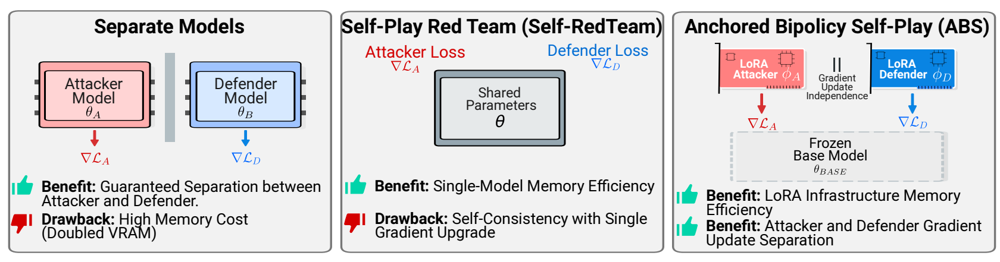
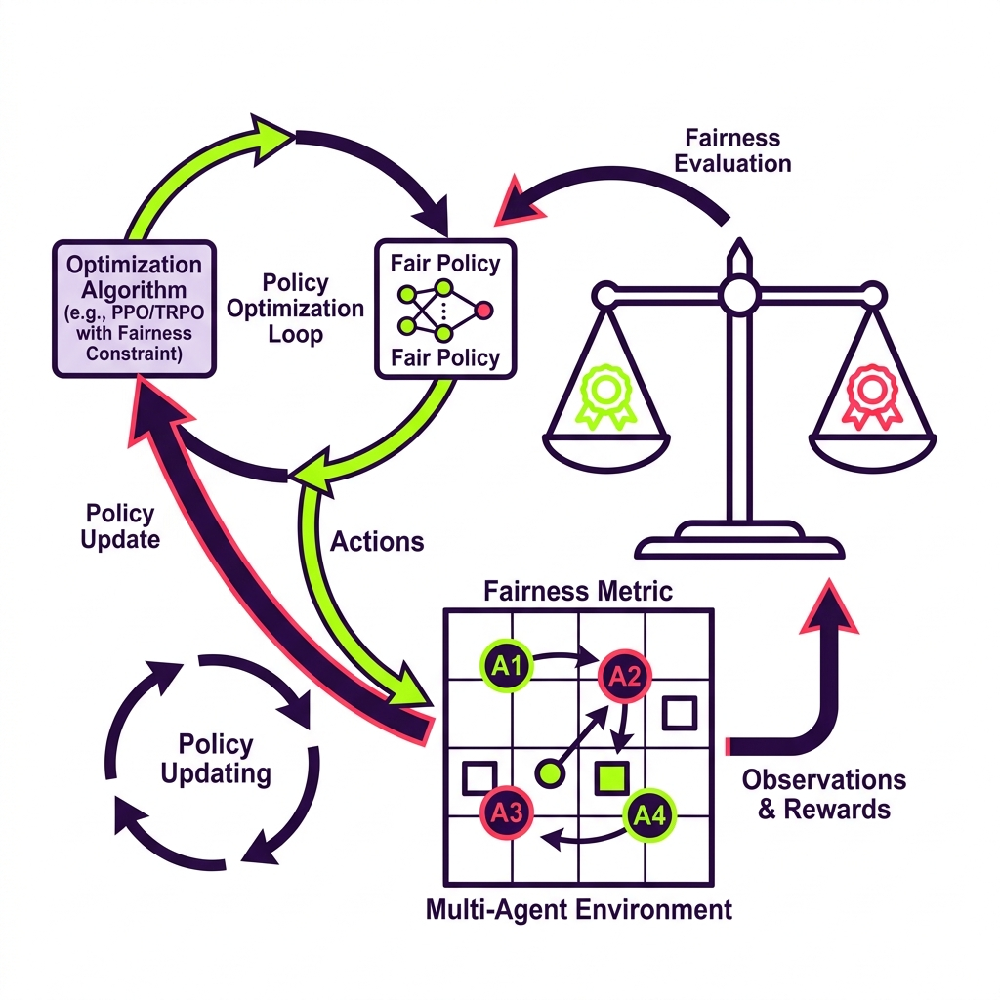
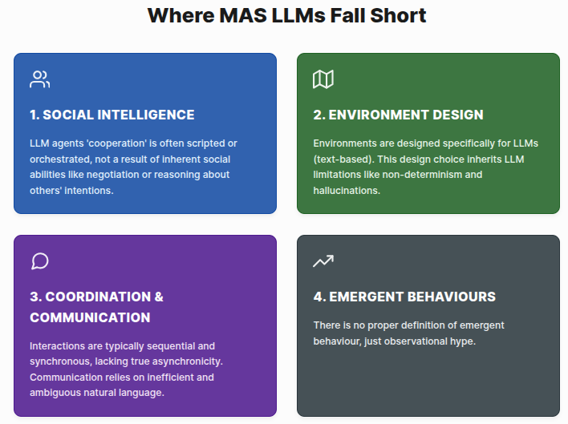

Safety
AI Agents
Multi-Agent Systems
Reinforcement Learning
Publications
Publication List
Research
Recent Projects

The Attacker in the Mirror
When users query Large Language Models (LLMs), are the outputs truly safe? Content generation carries
inherent risks, prompting researchers to reinforce these models using self-play loops, where a single
model
acts as both attacker and defender, iteratively hardening its own defenses. However, this approach raises
a critical concern: How do we prevent the model from collapsing into localized self-consistency when it
plays both sides?
To answer this, we introduce Anchored Bipolicy Self-Play (ABS), a novel framework that disrupts the
self-consistency assumption in LLM safety alignment. By training a pair of adversarial policies that
specifically exploit the model’s internal guardrails, we demonstrate that current alignment techniques
remain fundamentally vulnerable to coordinated self-play attacks.

Fairness Aware RL via PPO
Orchestrating agents that collectively behave fairly while efficiently pursuing their goals is a critical
frontier in fair reinforcement learning (Fair RL). However, a persistent challenge remains: How can we
enforce and enhance fairness when certain agents possess sensitive attributes?
To address this, we introduce Fair-PPO, an adaptive, PPO-grounded optimization method designed to
dynamically re-orient policy convergence whenever a target fairness metric is violated. Unlike static
approaches, Fair-PPO actively accounts for and adjusts gradient convergence by balancing two critical
dimensions: historical bias derived from past trajectories, and potential future bias estimated via the
value function.

LLMs Miss the Multi-Agent Mark
We argue that large language models fundamentally lack the coordination capabilities required for effective multi-agent systems. Through systematic evaluation, we demonstrate critical gaps in strategic reasoning, theory of mind, and emergent communication when LLMs are deployed as autonomous agents.
Experience
Research roles
PhD Candidate, Safe & Trusted AI CDT
King’s College London & Imperial College London
Fairness in multi-agent systems. Supervisors: Prof. Elizabeth Black, Prof. Michael Luck, Dr. Jie Zhang.
Visiting Researcher, Social Dynamics Group
Nokia Bell Labs
Working on AI risks and Human-Agent Interactions (Multi-Agent Systems).
Research Assistant
Centre for Risk Studies, Cambridge Judge Business School
Risk researcher and modeller in business, financial, and cyber risk.
Service & Outreach
Community, conferences, and volunteering
Academic service
- Organizing Committee, LOD 2020–2025.
- Student Volunteer, IJCAI 2024.
- Reviewer, AAAI.
Projects & volunteering
- Lead, Lunchtime Dialogues: Identity & Social Justice (2024–2025), King’s College London.
- Lead, Dialogues about Identity and Privilege (2023–2024), NMES, King’s College London.
- Interviewer, Ukrainian Global University (2022–2023).
- Volunteer, Kharkiv and Przemyśl Project (2022) and multiple human rights initiatives.
Projects
Open-source and research code
Fair-PPO
Fairness-aware reinforcement learning via Proximal Policy Optimization.
HospitalSim
Reinforcement learning environment simulating hospital daily routines.